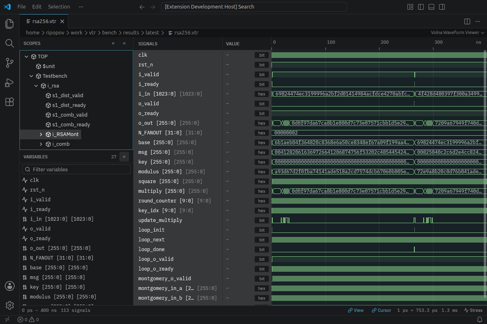
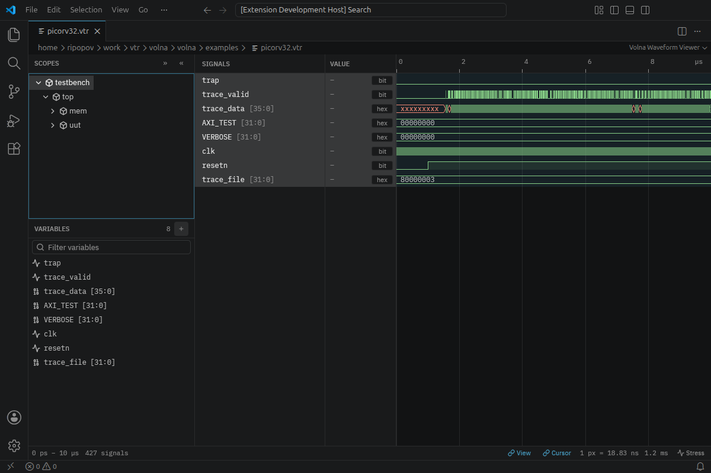

Waveforms
Painting walks pixel columns, not transitions, so its cost follows the window width.
rsa256.vtr
Volna design system
Every v- class in components/components.css and components/base.css, in the dark and the light theme. docs/tests/design-system-visual.test.mjs screenshots each section and compares it with baselines/.
--trace-vtr
# Trace a Verilator model into VTR
$ verilator --cc --trace-vtr top.sv
$ volna trace.vtrlet w = Writer::create("trace.vtr")?;
w.change(clk, 1)?; // one value changeBuild with cargo build --release -p volna.
Volna shows your hardware run at the level you designed it. 243 MiB vs 389 MiB on openC910 CoreMark.
Native, WebAssembly and VS Code · Open source
Waveforms, transactions, pipeline stages and simulator logs from one file.
Proof
Numbers from the benchmark report, best-of-N on the same machine.
Painting walks pixel columns, not transitions, so its cost follows the window width.
rsa256.vtr
Every CoreMark instruction with its stages, folds and flushes.
c910 CoreMark
Simulator messages as typed, timestamped records beside the waves.
Waveforms
Press A to plot a signal.

Local and remote loading share one interface.

rsa256.vtrNative build for x86_64.
Runs in the browser with WebGPU or WebGL2.
| workload | best FST | VTR | VTR vs FST |
|---|---|---|---|
| scr1_axi | 2.36 MiB | 1.19 MiB | 50% |
| c910_coremark | 388.93 MiB | 243.13 MiB | 63% |
| scr1_x8 | 25.31 MiB | 11.88 MiB | 47% |
| rsa256 | 31.66 MiB | 30.99 MiB | 98% |
Volna runs natively, in the browser and inside VS Code.
Volna needs a stable Rust toolchain.